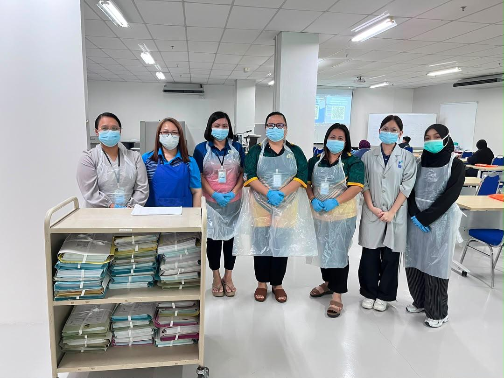
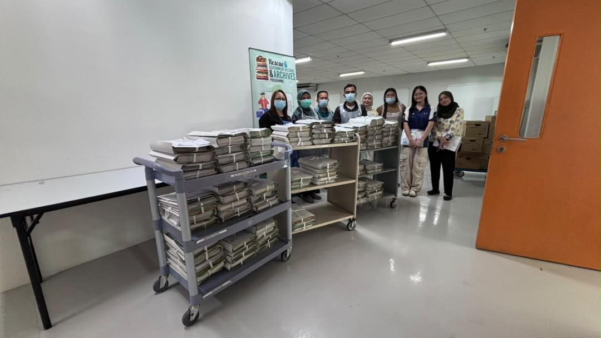
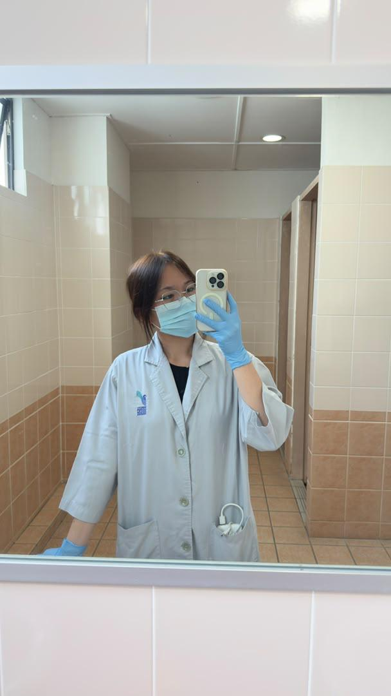
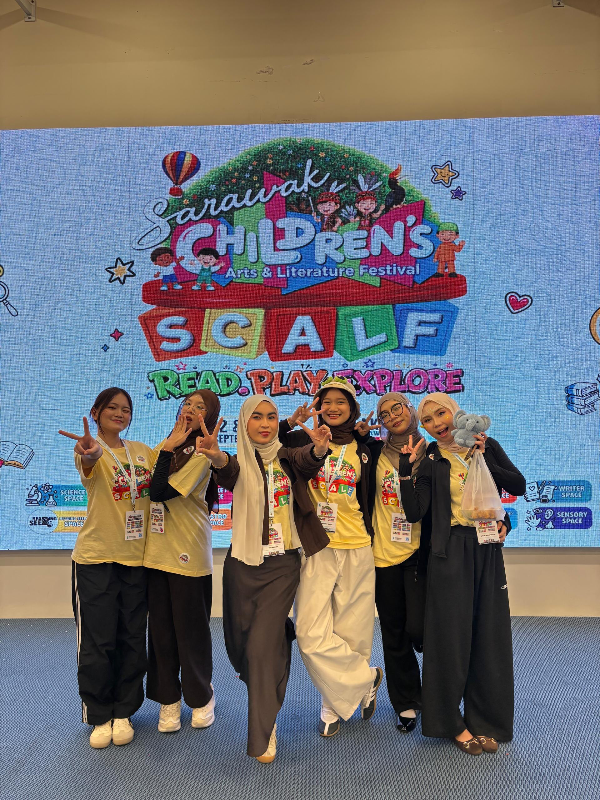

Stepping Into a New Environment
Starting an internship meant adjusting to a new environment, meeting new people and learning about professional expectations.
A PERSONAL DIGITAL DIARY
Little moments, lovely memories.
CHAPTER 03 / EXPERIENCE
Every experience is a new chapter, filled with lessons, challenges and opportunities to grow.

A chapter of learning and growth ♡
MY INTERNSHIP JOURNEY
Archive Management Sector
As part of my Diploma in Information Management, I completed my industrial training at Pustaka Negeri Sarawak under the Archive Management Sector.
This internship gave me an opportunity to experience a professional working environment and understand more about the field of information management.
It was an important part of my learning journey, allowing me to connect classroom knowledge with real workplace experiences.
Visit Pustaka Negeri SarawakMY JOURNEY
Starting an internship meant adjusting to a new environment, meeting new people and learning about professional expectations.
Throughout the internship, I had the opportunity to observe and learn more about the working environment in the information management field.
This experience helped me appreciate the importance of communication, responsibility and continuous learning.
THINGS I LEARNED
Here are some important skills and values that I focused on developing during my internship journey.
Learning how to communicate clearly and respectfully in a working environment.
Understanding the importance of cooperation and helping one another.
Becoming more aware of the importance of completing assigned work carefully.
Learning to become more independent when facing new situations.
MEMORIES FROM MY INTERNSHIP
A few photographs to remember this meaningful chapter.



A PAGE FROM MY DIARY
"Growth begins when we step outside our comfort zone."
TURN THE PAGE
Discover more about my educational journey.
Next Chapter: Education